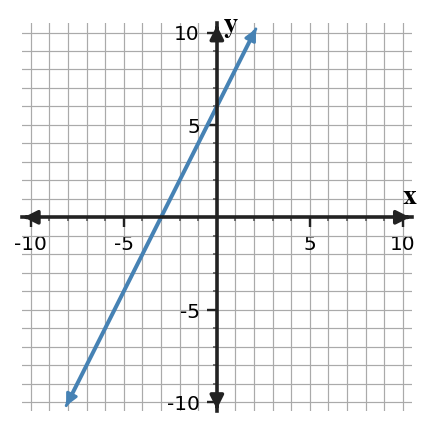
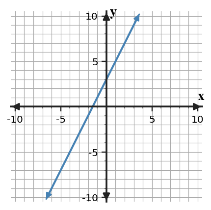
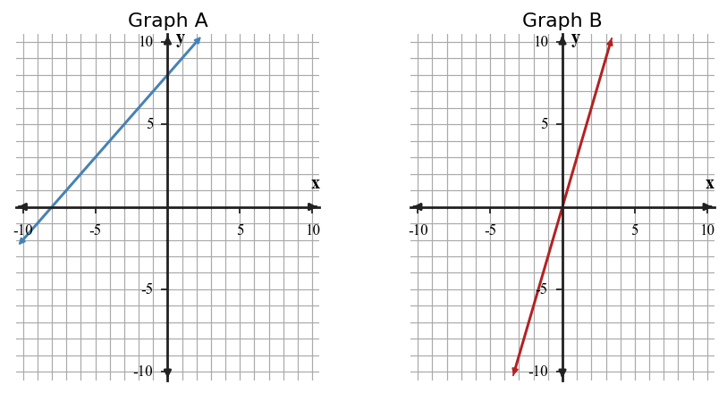
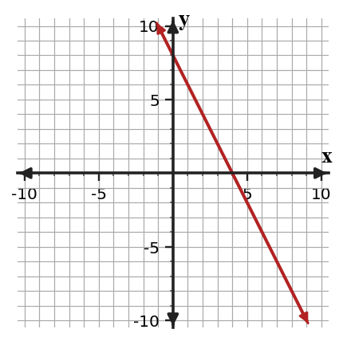

Unit 0B Progress Tracker
Students will represent, interpret, and justify relationships on the coordinate plane by connecting points, axes, intercepts, rates of change, and linear representations to mathematical situations.
I need more instruction and practice.
I understand most of it but need more practice.
I can do this independently.
I can teach it.
Progress Tracking
Progress Tracking
Evidence
Progress Tracking
Evidence
Progress Tracking
Evidence
Progress Tracking
Evidence
Learning Ladder
| Rung | I Can Statement | DOK | Level |
|---|---|---|---|
| 8 | I can design a brief model that connects a context to a graph, table, equation, and conclusion. | DOK 4 | Above |
| 7 | I can construct and revise a comparison of two relationships using evidence from multiple representations. | DOK 4 | Above |
| 6 | I can critique a conclusion about a linear relationship by checking rate, starting value, and representation evidence. | DOK 3 | Essential |
| 5 | I can assess whether tables, graphs, and situations represent constant rate of change. | DOK 3 | Essential |
| 4 | I can apply slope and starting value information to create a linear equation. | DOK 2 | Essential |
| 3 | I can construct tables and graphs from input-output rules and contextual descriptions. | DOK 2 | Essential |
| 2 | I can use coordinate plane features, ordered pairs, and intercepts to interpret graphs. | DOK 1 | Essential |
| 1 | I can classify basic representations as tables, graphs, equations, rules, or contexts. | DOK 1 | Essential |
Student Goal Setting
Unit 0B Practice by Depth of Knowledge
Format: 3-5 minute warm-up, vocabulary check, representation recognition, or exit ticket
Purpose: DOK 1 reveals whether students can read coordinate plane features, use ordered pairs, and access basic representations before more complex linear reasoning.
Assessment Ideas
- Coordinate Pairs and Axes Can Be Assessed After Section 0B.1 - Apply coordinate signs and positions; distinguish x- and y-coordinates; connect axis locations to input-output order.
- Intercepts and Starting Values Can Be Assessed After Section 0B.1 - Determine x- and y-intercepts from graphs and tables; read starting amounts from context graphs; connect vertical intercepts to situation meanings.
- Input-Output Rules Can Be Assessed After Section 0B.2 - Use input-output patterns and rules; complete missing outputs in tables; select tables that match symbolic rules.
- Rates and Linear Features Can Be Assessed After Section 0B.4 - Interpret repeated change and linear features; identify slope, fixed amount, and starting value; compare output changes across tables.
DOK 1 results show whether students can read coordinate pairs, axes, intercepts, input-output rules, and repeated change before producing full linear models. The data separates basic coordinate-language readiness from early rule, rate, and starting-value readiness.
For the ordered pair $(-6,{4})$, identify the $x$-coordinate and the $y$-coordinate.
A point is located at $({0},-9)$. Which axis is it on?
- $x$-axis
- $y$-axis
- Both axes
- Neither axis
Classify each representation as a table, graph, equation, rule, or context.
| Representation | Type |
|---|---|
| $y={2}x+7$ | |
| Start at ${5}$ and add ${3}$ each step. | |
| A list of input values and output values in rows. |
Use the rule $y={4}x-3$. What is the output when $x={5}$?
Complete the missing output.
| Input | 0 | 1 | 2 | 3 | 4 |
|---|---|---|---|---|---|
| Output | 6 | 9 | 12 | 15 |
Find the repeated change in the outputs.
| Input | 0 | 1 | 2 | 3 |
|---|---|---|---|---|
| Output | 18 | 14 | 10 | 6 |
In the equation $y=-{2}x+11$, identify the rate of change and the starting value.
For the graph shown, identify the $x$-intercept and the $y$-intercept.

Format: Mini-quiz, graph/table task, matching task, partner check, or short written task
Purpose: DOK 2 reveals whether students can move between representations and use patterns, rates, and starting values to represent linear relationships.
Assessment Ideas
- Graph Tables and Intercepts Can Be Assessed After Section 0B.1 - Construct coordinate graphs from tables and contexts; choose readable axis scales; state intercepts and trends from graphed relationships.
- Write and Check Rules Can Be Assessed After Section 0B.2 - Formulate rules from input-output tables; generate tables from symbolic rules; check ordered pairs by substitution.
- Constant Rate Procedures Can Be Assessed After Section 0B.3 - Apply constant-rate procedures; test output differences for equal input intervals; predict values from starting amounts and graph points.
- Linear Models and Comparisons Can Be Assessed After Section 0B.5 - Solve linear-model comparisons; write equations from tables; compare starting values and rates to find when one plan becomes greater.
DOK 2 results show whether students can carry procedures across graphs, tables, equations, and contexts without losing the meaning of scale, intercept, rate, or starting value. The data helps pinpoint whether errors come from graph setup, rule formation, constant-rate calculation, or linear comparison.
Generate a table for the rule $y={3}x+4$ using inputs ${0}$ through ${4}$. Then write the ordered pairs.
Use the table to write a rule in words and symbols. Then predict the output for input ${8}$.
| Input | 0 | 1 | 2 | 3 | 4 |
|---|---|---|---|---|---|
| Output | 9 | 13 | 17 | 21 | 25 |
Plot the points $({0},{5})$, $({2},{9})$, $({4},{13})$, and $({6},{17})$ on the coordinate plane. Then describe the trend and state the vertical intercept.

A fundraiser starts with ${12}$ dollars already donated and earns ${5}$ dollars for each ticket sold. Write a linear equation for the total dollars $d$ after $t$ tickets, then find the total after ${8}$ tickets.
Use the graph to identify the starting value and rate of change. Then write an equation in the form $y=mx+b$.

Graph A and Graph B show two relationships. Compare their rates of change and starting values, then decide which relationship has the greater output when $x={5}$.

A student records the number of completed practice problems after each day.
| Day | 0 | 2 | 4 | 6 |
|---|---|---|---|---|
| Problems completed | 10 | 24 | 38 | 52 |
Choose reasonable axis labels and scales for a graph. Then explain what one grid square should represent on each axis.
A water tank begins with ${24}$ gallons and loses ${4}$ gallons each minute. Build a table for minutes ${0}$ through ${6}$, write an equation, and identify when the tank reaches ${0}$ gallons.
Format: Constructed response, model critique, strategy comparison, representation analysis, or discourse prompt
Purpose: DOK 3 reveals whether students can reason across representations, check claims, and use evidence about rate, starting value, and graphical features.
Assessment Ideas
- Critique Graph Interpretations Can Be Assessed After Section 0B.1 - Critique graph-interpretation claims; use both intercepts to correct starting-value errors; plan axis scales for readable contextual graphs.
- Justify Rule and Pattern Consistency Can Be Assessed After Section 0B.4 - Verify rule and pattern consistency; locate mismatches in tables; justify linearity and later predictions with repeated differences and rules.
- Compare Representations with Evidence Can Be Assessed After Section 0B.5 - Construct representation-consistency checks; compare graph, table, context, and equation evidence; revise mismatches using slope and starting value.
- Compare Claims and Methods Can Be Assessed After Section 0B.5 - Assess claims about competing linear plans; compare table and rate-based methods; reason from equation structure when outputs can or cannot match.
DOK 3 results show whether students can use evidence to critique claims, verify representation consistency, and compare methods rather than relying on surface features. The data reveals whether students can justify intercept meanings, rule-table mismatches, slope/start evidence, and competing-plan conclusions.
A student says, “The relationship starts at zero because the line crosses the $x$-axis.” Critique the statement using both intercepts and the meaning of the axes.

The rule and table are supposed to match. Find the first mismatch, explain the correct value, and revise the table.
Rule: $y={3}x+2$
| $x$ | 0 | 1 | 2 | 3 | 4 |
|---|---|---|---|---|---|
| $y$ | 2 | 5 | 9 | 11 | 14 |
Compare two strategies for deciding when $A(x)={2}x+15$ becomes less than $B(x)={5}x+3$: making a table and reasoning from rates. Explain what each strategy shows well and where each strategy might be less efficient.
Does the table show a constant rate of change? Justify your answer by accounting for the unequal input steps.
| $x$ | 0 | 1 | 3 | 6 |
|---|---|---|---|---|
| $y$ | 4 | 7 | 13 | 22 |
Compare the table and the graph. Decide whether one equation can represent both, and justify your conclusion using rate of change and starting value evidence.
| $x$ | 0 | 1 | 2 | 3 |
|---|---|---|---|---|
| $y$ | 3 | 5 | 7 | 9 |

A student claims, “The relationship with the larger starting value will always have the larger output.” Use $A(x)=x+20$ and $B(x)={4}x+2$ to critique the claim with evidence.
You need to graph the number of tickets remaining every ${15}$ minutes for a ${2}$-hour event. Construct a strategy for choosing axis labels and scales so the graph is readable and precise.
Three representations are intended to show the same relationship. Identify the representation that does not fit, revise it, and explain your evidence.
Context: A club starts with ${6}$ posters and makes ${4}$ more each hour.
Equation: $p={4}h+6$
| Hours | 0 | 1 | 2 | 3 |
|---|---|---|---|---|
| Posters | 6 | 10 | 15 | 18 |
Format: Brief performance task, modeling task, critique-and-revise task, design task, or capstone synthesis task
Purpose: DOK 4 reveals whether students can synthesize coordinate plane reasoning, input-output patterns, and linear representations in a short modeling or revision task.
Assessment Ideas
- Create Coordinate Models Can Be Assessed After Section 0B.4 - Design coordinate-plane models under constraints; coordinate contexts, ordered pairs, graphs, and intercepts; justify agreement across representations.
- Revise and Synthesize Rules Can Be Assessed After Section 0B.4 - Create corrected and complete rule representations; revise one-error tables into constant-rate patterns; synthesize tables, rules, graphs, and constraints.
- Design Linear Models Can Be Assessed After Section 0B.5 - Develop realistic linear models and domains; connect context, equation, table, graph, and intercept; recommend representations that best show constant rate.
- Compare and Recommend Plans Can Be Assessed After Section 0B.5 - Evaluate competing reward plans; revise one-week comparison claims; recommend short-term and long-term choices using starting value, rate, and time evidence.
DOK 4 results show whether students can design, revise, and defend constrained linear models across context, table, graph, and equation forms. The data indicates readiness for independent modeling, representation choice, and short-term versus long-term comparison decisions.
Design a short coordinate-plane model for a classroom points situation involving a nonzero starting amount and steady change. Include axis labels, at least three ordered pairs, a table, an equation, a graph, and one sentence explaining an intercept.
A comparison poster claims Plan A is better because at week ${2}$, Plan A has ${18}$ points and Plan B has ${17}$ points. The plans are $A(w)={4}w+10$ and $B(w)={7}w+3$. Revise the comparison by adding a table, graph sketch, and conclusion that addresses both starting value and rate of change.
Create a complete representation set for one input-output relationship. It must have a nonzero starting value, increase by the same amount each step, and use a rate that is not ${2}$ or ${5}$. Include a verbal rule, symbolic rule, five-row table, and three ordered pairs.
A school club’s table is supposed to show a constant-rate pattern.
| Input | 0 | 1 | 2 | 3 | 4 |
|---|---|---|---|---|---|
| Output | 8 | 12 | 15 | 20 | 24 |
Revise the flawed model by deciding whether one output is likely an error, replacing it, and writing a rule that fits the corrected table. Defend your revision.
Design two possible linear equations for a real situation that starts with a fixed amount and changes at a constant rate. Choose the more realistic model and explain the domain restrictions for your context.
Create a linear tile pattern with these constraints: Figure ${0}$ has a nonzero number of tiles, Figure ${4}$ has between ${20}$ and ${40}$ tiles, and the growth is not ${1}$, ${2}$, or ${5}$ tiles per figure. Provide a table, rule, and explanation of how the constraints are satisfied.
Two reward plans have different strengths. Plan A begins with more points, and Plan B earns points faster. Create equations for both plans, then recommend one plan for a student participating for ${3}$ weeks and one plan for a student participating for ${12}$ weeks. Justify using at least two representations.
Develop a linear model for a school supply drive. Your model must include a context, equation, table, and conclusion. Then explain one limitation of using your model to predict far beyond the values in the table.